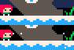
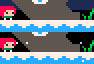

back to homepage
contents
spike clip
spike jump
empty dash
soft dash
boost
cloud boost
corner jump
landing clip
gemskip
grace frames
parity
spike clip
there are two ways in which spikes can be clipped:
1) spikes don't kill you if you're moving in the direction they face, and gravity isn't applied when you're directly above the ground.
if you land on the ground with an upward velocity, you can clip through up-facing spikes until you're eventually lifted off of the ground (giving a boost).

this clip can be done without spikes, and is useful for quickly restoring dashes, or getting a boost.
2) in the early frames of a dash, the distance you travel in 1 frame can be larger than a spike's hitbox. if a spike doesn't have a solid block behind it, e.g., the ceiling in 2500m, you can completely dash over it.
1) spikes don't kill you if you're moving in the direction they face, and gravity isn't applied when you're directly above the ground.
if you land on the ground with an upward velocity, you can clip through up-facing spikes until you're eventually lifted off of the ground (giving a boost).
this clip can be done without spikes, and is useful for quickly restoring dashes, or getting a boost.
2) in the early frames of a dash, the distance you travel in 1 frame can be larger than a spike's hitbox. if a spike doesn't have a solid block behind it, e.g., the ceiling in 2500m, you can completely dash over it.
spike jump
if your x-coordinate has odd parity (see parity), you can get close enough to left-facing spikes to safely walljump off of solid blocks behind them.
empty dash
if you dash without providing directional input, you will perform a shorter forward dash than if you were holding forward. most of the time, this can be used to change your x-coordinate's parity.

note: empty dashes are not possible in the new release's port of celeste classic. a full-length forward dash will be performed instead.

note: empty dashes are not possible in the new release's port of celeste classic. a full-length forward dash will be performed instead.
soft dash
if you are next to the room's boundary and moving toward it such that you would exceed the boundary on the next frame, dashing away from the boundary during this frame will slow the startup of the dash's horizontal speed.
boost
boosts refer to the additional height gained from clipping a solid block with an upward velocity (restoring both your dash and grace frames), and performing a grace jump while above the ground.
cloud boost
if you pass through a cloud such that there's a frame of you directly above the cloud, both your dash and grace frames are restored whilst maintaining your velocity.
corner jump
corner jumps refer to one of two walljump setups:
1) with a well-positioned walljump or diagonal dash, you can get around a solid block's corner with enough height to walljump off of that block.
2) because spikes don't kill you if you're moving in the direction they face, if you steer in the direction a spike's facing at the right moment, you can get close enough to safely walljump off of a solid block's corner.
1) with a well-positioned walljump or diagonal dash, you can get around a solid block's corner with enough height to walljump off of that block.
2) because spikes don't kill you if you're moving in the direction they face, if you steer in the direction a spike's facing at the right moment, you can get close enough to safely walljump off of a solid block's corner.
landing clip
upon colliding with a solid block, your velocity and subpixels in the collision direction will be set to 0. if you fall such that there's a frame of you directly above the ground without colliding with it, you can maintain your velocity and subpixels by leaving the ground on the next frame.

landing clips allow for subpixel manipulation, and restoring dashes without coming to a full vertical stop.
landing clips allow for subpixel manipulation, and restoring dashes without coming to a full vertical stop.
gemskip
gemskip refers to exiting 2200m without collecting the dash power-up. there are two ways of accomplishing this:
1) by dashing on the same frame that you trigger the chest opening sequence, the dash gets performed after the sequence is over, and both your dash and grace frames are restored. you can then exit by immediately grace jumping, and dashing upward when high enough.
2) walljumping in the ditch next to the chest with a y-coordinate between 93.35 and 93.40 lets you clip the ground to get a boost. you can then exit by grace jumping at the boost's peak, and dashing upward when high enough. this route is typically denoted chestskip.
1) by dashing on the same frame that you trigger the chest opening sequence, the dash gets performed after the sequence is over, and both your dash and grace frames are restored. you can then exit by immediately grace jumping, and dashing upward when high enough.
2) walljumping in the ditch next to the chest with a y-coordinate between 93.35 and 93.40 lets you clip the ground to get a boost. you can then exit by grace jumping at the boost's peak, and dashing upward when high enough. this route is typically denoted chestskip.
grace frames
when leaving the ground by any means other than a jump, e.g., running off a ledge or dashing off, the game gives you a 6 frame grace period to input a jump as if you were still on the ground. resulting mid-air jumps are denoted grace jumps.
parity
parity refers to a state of being even or odd, and whether your position has even or odd-numbered coordinates determines whether certain options, like spike jumps, are possible. below is an overview on controlling your x-coordinate's parity:
you spawn with an even x-coordinate, and regular horizontal movement like walking and drifting mid-air can't change your x-coordinate's parity.
horizontally aligning yourself with the room's boundary or a solid block will make your x-coordinate odd.
depending on subpixels, empty dashes usually switch your x-coordinate's parity, and regular forward dashes usually preserve its parity.
depending on subpixels, notably as a result of time spent wall sliding, time spent mid-air, time spent moving into the room's boundary, and many other factors, walljumps and diagonal dashes may or may not switch your x-coordinate's parity.
you spawn with an even x-coordinate, and regular horizontal movement like walking and drifting mid-air can't change your x-coordinate's parity.
horizontally aligning yourself with the room's boundary or a solid block will make your x-coordinate odd.
depending on subpixels, empty dashes usually switch your x-coordinate's parity, and regular forward dashes usually preserve its parity.
depending on subpixels, notably as a result of time spent wall sliding, time spent mid-air, time spent moving into the room's boundary, and many other factors, walljumps and diagonal dashes may or may not switch your x-coordinate's parity.